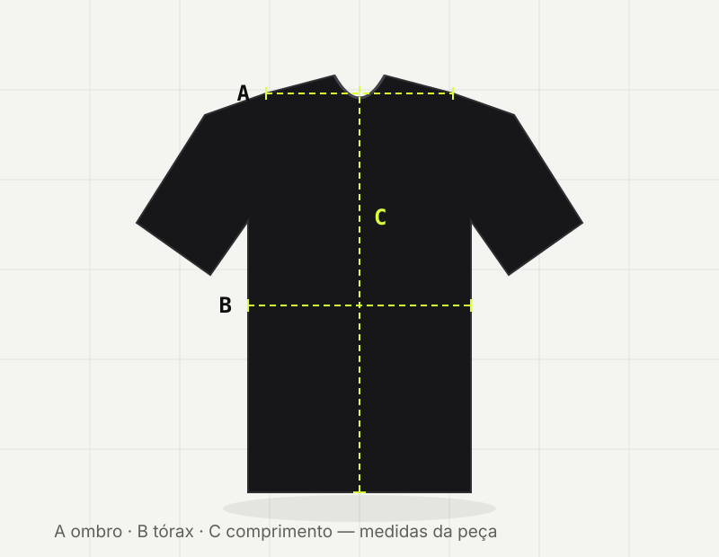

Amplo de propósito
Ombro caído e corpo largo. Fica solto sem parecer roupa emprestada.
- Tamanho: o seu de sempre.
- Quem quer justo: desça um tamanho.
O jeito certo de acertar o tamanho não é medir o corpo: é medir uma peça que você já veste bem e comparar com a tabela. Abaixo, as medidas reais de cada modelagem — tiradas da peça estendida na mesa, de costura a costura.
Quatro passos, dois minutos e uma fita métrica. É o método que usamos para conferir cada lote.
Não meça o seu corpo: meça a roupa. Pegue a camiseta ou calça que você mais gosta de usar e que cai do jeito que você quer.
Alise os vincos com a mão e deixe o tecido relaxado. Se você esticar, a medida mente: algodão pesado cede cerca de 1 cm a cada 10 cm de tecido forçado.
Use a fita métrica na horizontal e na vertical, sempre entre as costuras: ombro (A), largura do tórax (B) e comprimento (C).
Cada modelo tem a sua própria tabela — um hoodie e uma camiseta no mesmo tamanho têm medidas diferentes. Se ficar entre dois tamanhos, veja a seção de caimento.

Modelagem ampla com ombro caído. Todas em algodão penteado 240 g/m².
| Tamanho | Ombro (A) | Tórax (B) | Comprimento (C) | Equivale a |
|---|---|---|---|---|
| PP | 50 | 100 | 68 | 36 |
| P | 52 | 106 | 70 | 38 |
| M | 54 | 112 | 72 | 40 |
| G | 56 | 118 | 74 | 42 |
| GG | 58 | 124 | 76 | 44 |
| XG | 60 | 130 | 78 | 46 |
A linha destacada é o tamanho mais vendido. Como a modelagem é oversized, compre o seu tamanho de sempre — ela já veste ampla.
Malha canelada de algodão 180 g/m² com caimento slim. Sem ombro: mede-se pelo busto.
| Tamanho | Busto (B) | Comprimento (C) | Cava | Equivale a |
|---|---|---|---|---|
| P | 88 | 62 | 22 | 38 |
| M | 94 | 64 | 23 | 40 |
| G | 100 | 66 | 24 | 42 |
| GG | 106 | 68 | 25 | 44 |
A malha canelada tem elasticidade média: ela estica cerca de 4 cm de busto sem marcar. Quem prefere folga deve considerar um tamanho acima — não recomendamos, porque o caimento slim é o ponto da peça.
Moletom flanelado 320 g/m², interior felpado. Caimento regular, tronco reto.
| Tamanho | Ombro (A) | Tórax (B) | Comprimento (C) | Equivale a |
|---|---|---|---|---|
| P | 54 | 112 | 66 | 38 |
| M | 56 | 118 | 68 | 40 |
| G | 58 | 124 | 70 | 42 |
| GG | 60 | 130 | 72 | 44 |
| XG | 62 | 136 | 74 | 46 |
Vai usar por cima de outra camiseta? Some 6 cm ao tórax da peça de baixo e compare com a coluna B — provavelmente o tamanho acima é o certo.
Sarja ripstop com elastano e denim 14 oz. A numeração é a mesma do jeans tradicional.
| Tamanho | Cintura | Quadril | Comprimento | Entreperna |
|---|---|---|---|---|
| 38 | 78 | 100 | 102 | 76 |
| 40 | 82 | 104 | 103 | 77 |
| 42 | 86 | 108 | 104 | 78 |
| 44 | 90 | 112 | 105 | 79 |
Nas calças baggy, a cintura é alta e a perna é larga: se você está entre dois números, fique com o menor. Nas cargo de sarja, o elastano dá 2 cm de folga.
Aba curva com fivela de encaixe: um tamanho que se ajusta a quase todo mundo.
| Tamanho | Circunferência | Altura da copa | Aba |
|---|---|---|---|
| Único | 54 a 60 | 12 | 7 |
Meça a circunferência da cabeça com a fita passando 1 cm acima da orelha. Acima de 60 cm, fale com o atendimento: ajustamos a fivela na costura.
O mesmo tamanho veste diferente em cada modelagem. Este é o resumo honesto de cada uma.
Ombro caído e corpo largo. Fica solto sem parecer roupa emprestada.
Tronco reto, sem sobra e sem aperto. É a modelagem dos moletons e da maioria das calças.
Sobra proposital no comprimento, para acumular no tênis. Só nas calças.
Termina na cintura. Se você tem tronco longo, o comprimento muda bastante de tamanho para tamanho.
Se você mediu a sua peça e ficou na dúvida, envie as três medidas (A, B e C) para o atendimento junto com o modelo que você quer. Respondemos em até 1 dia útil dizendo qual tamanho serve melhor no seu caso.